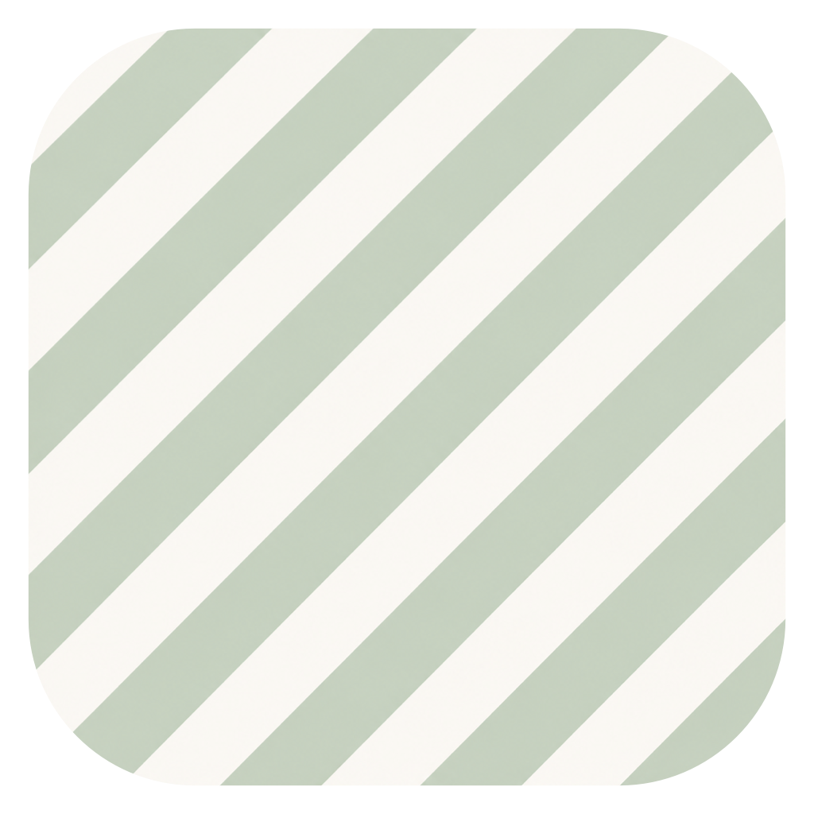

Mixed input
Capture text, links, images, PDFs, Office documents, Markdown, CSV, JSON, HTML, XML, RTF, and local files.

TossNotemacOS notes inbox
Drop messy information in. Let your AI organize it into clean Markdown notes with summaries, tags, and linked attachments.
Version 1.0.0. Built for macOS 13+ on Apple Silicon.
What it does
Capture text, links, images, PDFs, Office documents, Markdown, CSV, JSON, HTML, XML, RTF, and local files.
Send the combined context to your chosen AI provider and get editable Markdown with summaries, structure, and tags.
Save notes and attachments to Obsidian, a plain local folder, or Joplin Web Clipper.
Simple workflow
Paste text or drop files into TossNote.
Click Organize to preview, or Quick Save to trust the result and save immediately.
Find clean Markdown notes with original content and linked attachments in your chosen storage.
Download
The current DMG is an unsigned community build. macOS may ask you to confirm before opening it.